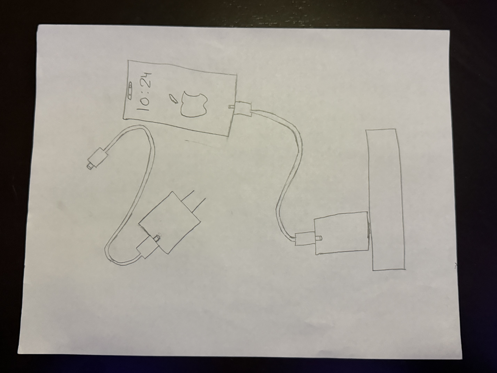

The item I chose is a broken phone charger cable that I’ve had for a couple of years. It’s a white USB Lightning cable that’s pretty worn out, especially near the ends where it connects to the phone and the outlet. The rubber coating is ripped in a few spots, and you can see the wires underneath. The cable feels stiff and bent in certain places from being wrapped up and shoved into bags so many times. Even when I used it recently, it would only charge my phone if I angled it a certain way or left it completely still.
I originally got this charger when I bought my phone, and it became the one I used every day. I kept it in my backpack, used it in my dorm room, and later brought it with me when I moved off campus. I used it constantly, especially at night or while studying. Over time, it started charging more slowly and would randomly stop working. I’m getting rid of it now because it barely works anymore and gets warm near the damaged parts, which makes it feel unsafe to keep using.
This happened about a year ago during finals week. I was at the library late at night studying for exams and working on assignments. My phone battery was almost dead, so I plugged it in using this charger. At first, it worked, but after a while, I noticed my phone wasn’t charging at all. I moved the cable around until the battery icon showed up again, something I had done way too many times before.
A little while later, I picked up my phone and noticed the charger was warm near the frayed part. My phone had stopped charging again, even though it was plugged in. I remember feeling frustrated because I needed my phone for notes and reminders, but also kind of nervous about how hot the cable felt.
A friend nearby let me borrow their charger for the rest of the night. That moment made me realize I’d been holding onto this charger longer than I should have just because it was convenient. Since then, I’ve been more careful about replacing damaged cables rather than letting them deteriorate to the point of becoming dangerous.
Most charging cables don't break because of electricity, they break because of bending. Tests found that some cables started failing after only a few hundred bends, while stronger ones survided over 10,000 bends before breaking. (Bends)
Apple warns that using frayed or damaged charging cables can cause overheating and other safety risks, and recommends replacing them once they show signs of wear. (Apple)
Cheap or poorly made charging cables can be dangerous because damaged or exposed wiring can lead to electrical shock or burns. (Cables)